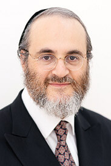
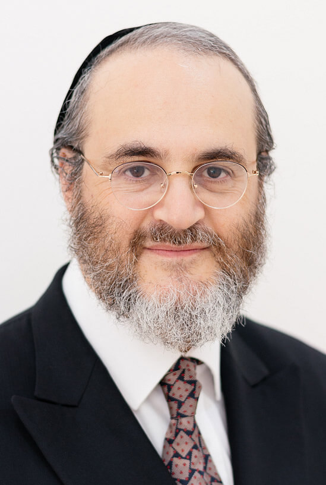
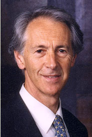
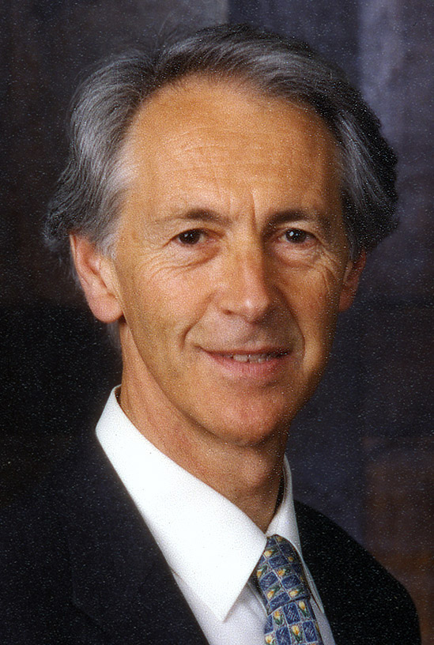

Doctors of the clinic
Dr. Matthew Starr
Ophthalmologist
Born: 14th September 1967 London UK. Qualifications: BA Hons (Medical Sciences Tripos), St Catherine’s
College Cambridge 1989; MA MB BChir Cambridge 1993; MD (Connecticut, USA) 1995; Diplomate of American Board
of Ophthalmology and Fellow of American Academy of Ophthalmology 2000. He maintains full registration with
GMC and has passed all of his annual assessments.
View Dr. Matthew Starr’s
CV
  Matthew Starr attended Haberdashers Aske’s School, Elstree, and then read medical sciences at St Catherine’s College, Cambridge. His clinical medical training was at University College & Middlesex Hospitals, including ophthalmology at Moorfields Eye Hospital. After qualifying in 1993 he spent his house officer years at Shaarei Tsedek Hospital, Jersualem and Beth Israel Hospital, New York (1993–1994 and 1995–1996). He was resident ophthalmic surgeon at the tristate eye trauma centre for the New York Area, New York Eye & Ear Infirmary, for 3 years (1996–2000). He undertook a fellowship in clinical neuro-ophthalmology with Dr. Barry Skarfe at Henry Ford Hospital Detroit and performed research on the healing of the retina after injury at the time. In 2000 he returned to England and undertook laser refractive surgery. He continues to treat private patients. In 2002 he began to undertake medicolegal cases and currently writes over 300 reports a year. He has appeared in court as an expert witness both at magistrate and crown court level. He has lectured to groups on the eye and its relation to the brain. He currently sees patients both in Harley Street, London, and carries out home visits in the UK and worldwide. His aim is to continue achieving high levels of satisfaction from patients and colleagues.
Obituary of Mr. Philip Alan John Starr (1933–2003)
published in the British Medical Journal
Ophthalmic surgeon Born: 29th July 1933 Birmingham, UK. Died: 19 September 2003. Qualifications: MRCS 1956; FRCS 1963; MB ChB Birmingham 1956; DO Sydney 1961; MD 1965; LRCP 1956; LMCC 1957; FRCS Edinburgh 1963; FRCSC 1978; FRCOphth 1988. View Mr. Philip Starr’s CV
  Philip Starr, known as ‘Jimmy’, was a consultant ophthalmic surgeon at the Royal Free Hospital, London. He was born in Birmingham in 1933. After qualifying, he spent four years in Canada and then in Australia, studying ophthalmology at the Sydney Eye Hospital. He subsequently returned to England, where he continued his training at the Western Ophthalmic Hospital as a senior registrar and at Moorfields as a chief clinical assistant.
He was appointed as a consultant ophthalmic surgeon to the Royal Northern Hospital, and later to the Royal Free. He was a pioneer in the field of refractive surgery, and hosted a symposium at which Slava Fyodorov, the Soviet father of modern radial keratotomy, was an active participant.
He also established a successful cataract and glaucoma practice in Harley Street, taking on the patients and rooms of that doyen of ophthalmology, Sir Stuart Duke-Elder. He was a founder member of the Independent Doctors’ Forum, his particular interest being in the area of revalidation.
He had many interests, including playing tennis for the Midlands, classical music and reading. He died on 19 September 2003 from carcinoma of the lung, leaving his devoted wife, Ruth, a daughter (Juliet) and two sons (Matthew and David), one of whom is an ophthalmologist. There are six grandchildren kneine hara—Joshua, Ben, Malka Atara, Shraga Nachman, Nosson Chaim, Ella Jane and Ora.
Tribute by David Cohen
It has been over 8 months since Jimmy left us and we all, in our own ways, are coming to terms with the immense loss of a beloved husband, father, father-in-law grandfather and friend.
Such was Jimmy’s impact during his lifetime that we cherish the joy and warmth of so many memories and in that we gain consolation...
Over the past few months there have been so many words of praise, respect and affection spoken of Jimmy. We remember the inspiring words of Dayan Binstock during the week of shiva. There have been numerous letters from all over the world from patients and friends.
It is my privilege to pay tribute to our friend although it involves deep emotion. but as it says in the Talmud “He in whom the spirit of his fellow creatures takes delight, in him the spirit of G-d takes delight.” In Jimmy we took delight.
In every aspect of his life: family, personal, religious, professional, Jimmy was a very special person. His moral character was upright, his home life beautiful, he was a faithful friend, kind- hearted and generous. He had a high intellect and he was a superb medical practitioner.
Jimmy had a “shem tov”—a good name. In the seventh chapter of Ecclesiastes there is the declaration that “a good name is better than precious oil and the day of death better than the day of one’s birth”. Now, in the jewish interpretation, this loses its touch of pessimism and shows the teaching of our faith in relation to life and death. it means that to a man who has so lived that he has been crowned with a good name, that accompanies him into the hereafter. Jimmy was crowned with a good name.
He was a man gifted with talents far beyond the normal, and to those gifts were added a charm of disposition, a warmth of heart, a humane caring spirit and a depth of spiritual insight.
Many of us have seen, and relished, a remarkable side of Jimmy. Who can fail to recall with great sentiment, the wonderful speech that he made at his 70th birthday party?
On that occasion we had an insight into his philosophy of life, and his deep belief and ideals, at a time when the calls on his courage and stamina had become immense.
When he had finished speaking that day, we were lost for words as we absorbed what had been a most moving moment. And who can fail to have been humbled by witnessing how Jimmy fought his illness with such immense resolution, tenacity and deep faith?
And then—his fight was over, and as in the beautiful words of Robert Browning : “Like a hand which ends a dream, death with the might of his sunbeam, touches the flesh and the soul awakes...”
Many of us have experienced Jimmy’s quiet bright humour and sheer enjoyment of life, in which his beloved Ruth meant everything.
And did we have fun! I recall with pleasure so many episodes: wonderful dinners; holidays; terrible breaches of etiquette at the snooker table; tangled ropes on boats; brilliant fancy dress costumes at memorable parties; countless celebrations; considerable laughter.
There was his ability to sleep right through high drama on board a yacht drifting, out of control, in a storm, in the path of an oncoming giant ferry; there was the discovery of his talent as a rap artist; there were his witty parodies composed for parties; there was his utterly brilliant ability to do an authentic morris dance—whilst keeping a straight face. And so much more.
Jimmy was a revelation. There was not just his more serious side when his thirst for knowledge, his enquiring mind and his great intelligence made him such stimulating and rewarding company.
I know that his memory will be an abiding inspiration to his family—of whom he was so proud—and it will remain a beautiful possession of us all.
I want to close with these lines of William Wordsworth: “...and when the stream which overflowed the soul was passed away, a consciousness remained that it had left, deposited upon the silent shore of memory, images and precious thoughts that shall not die, and cannot be destroyed...”